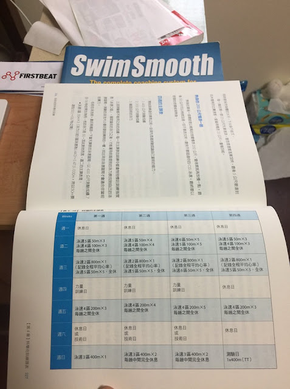

400 公尺的游泳訓練 PB 班
下個月會有一場跟 LAVA 鐵人公司合作的「自由式游泳 PB 訓練班」，目標是 400 自，由我擔任主教練。為期四週。訓練之前會有兩天先修課，目的是先讓大家了解整個訓練框架，以及學習四週訓練中的熱身環節、力量動作與技術動作的要求。還會協助大家設定好個人化的泳速區間。
課表的框架一致，但每個人的泳速都不一樣。一週練四次游泳、一次專項力量，設定好的 10 分鐘活動度動作每天都要練。游泳課表的訓練流程是：熱身→主課表→緩和。先修課的目的就是要把熱身和緩和的流程教清楚，也會在課堂上下水試練一次課表，帶大家「游」一遍流程。
每次練完要寫日誌上傳，線上監控大家訓練的進度。線下團練會由 LAVA 找來的教練夥伴和我們在已徵選出的兩位優秀「旁聽教練」組織「團練」進行輔助訓練。
這四週的課表主要的訓練項目的：1)游泳；2)力量。主課表如下，也是新書《自由式的科學化訓練》227 頁中表 4.16 中的範例課表：

其中的「泳速區間」是每個人都不一樣的部分，上課時會教大家怎麼找到自己的泳速，並在課堂中詳加解釋訓練的目的與執行課表的方法。書中第四章已詳細說明各個環節的側重點，有興趣的人也可以直接跟著書中的指示訓練。
「要怎麼知道自己的泳姿是否調整到位?」
這也是今年初的自行車訓練營，在開營前最多人提出的問題。關於這個問題我這邊說明一下，為何我對這種教練不在身旁的訓練模式仍深具信心：我教游泳時最想調整的就是大家的泳姿了，但後來我發現，泳姿之所以調不過來，在很多情況下並不是教練在旁看著、在旁邊喊就有用的，「泳姿」調整的前提在活動度的優化，「泳技」進步的前提在手臂支撐力和水感技巧的整合。
在活動度不足、支撐力不夠的情況下，泳姿是調整不出來的，僅管硬ㄍㄧㄥ出看起漂亮的泳姿，水感還沒跟力量整合之下，划手的效率還是會出不來。所以，為何我會對這種訓練模式有信心，因為對的大部分的泳者而言，缺的不是泳姿的即時調整，而是有系統的訓練方法。當然對於活動度和力量都很優秀的選手而言，有教練在旁即時細微地調整泳姿是「很重要」的，但大部分人所需要的是更底層的訓練。
這四週訓練營的目標就是透過有系統地改善大家的活動度、力量、水感訓練，並輔以泳速區間的概念，使學員能自然而然地游得更輕鬆。當動作變輕鬆了，相同距離下自然能游出更快的速度。講更具體一點，只要四百公尺進步了，千五也會跟著進步，這四週的目標就是先提升泳者的 400 自 PB。
但這門課並不是在教游泳，還不會游自由式的人請勿報名。至少要能在 45 分鐘之內用自由式完成 1500 公尺才適合參加。
詳細的課程介紹與訓練時程請參考官方的活動簡章：https://reurl.cc/4z9E3